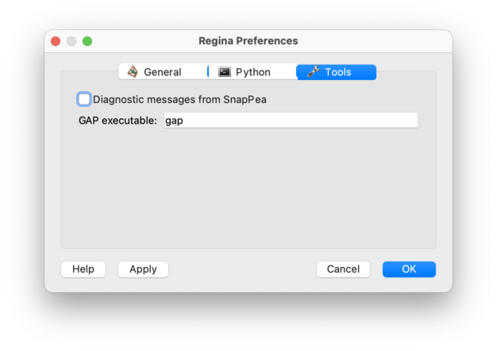

Tools Options | |
| Prev | Configuration | Next |
The Tools options panel controls how Regina works with third-party software.

The settings here are:
- Diagnostic messages from SnapPea
Specifies whether the SnapPea kernel should write diagnostic messages to the terminal.
When you are working with the SnapPea kernel (for instance, if you are using a SnapPea triangulation, or visiting Regina's SnapPea tab), the SnapPea kernel sometimes sends out messages indicating what it is doing. An example of such a message might be “Computing hyperbolic structure . . .”.
If this option is checked, then all such messages will be written to the terminal from which you started Regina. If this is unchecked (or if you started Regina some other way, such as from a menu or taskbar), then these messages will be suppressed.
- GAP executable
Tells Regina where to find GAP (Groups, Algorithms and Programming). GAP is not required by Regina, but if it is installed then it can help simplify group presentations.
This setting should be the name of the command that starts GAP (the default is simply
gap). Regina will look for this command on the default search path. If you have installed GAP somewhere unusual then you will need to provide the full path to the executable (such as/usr/local/bin/gap).
| Prev | Contents | Next |
| Python Options | Up | Compiling Regina Into Your Projects |